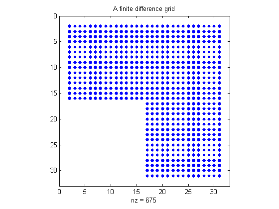
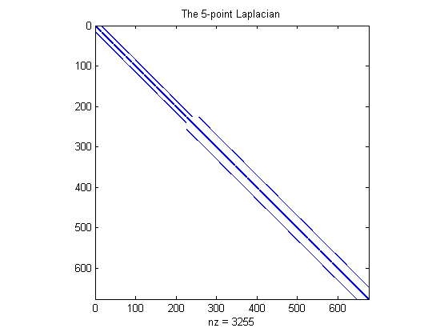
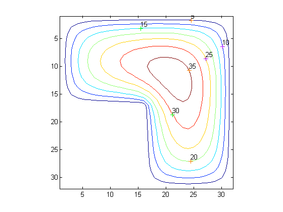
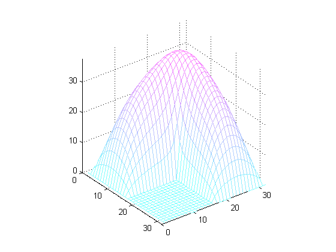

This demo illustrates the computation and representation of the finite difference Laplacian on an L-shaped domain.
For this example, NUMGRID numbers points within an L-shaped domain. The SPY function is a very useful tool for visualizing the pattern of non-zero elements in a given matrix.
R = 'L'; % Other possible shapes include S,N,C,D,A,H,B % Generate and display the grid. n = 32; G = numgrid(R,n); spy(G) title('A finite difference grid') % Show a smaller version as sample. g = numgrid(R,12)
g =
0 0 0 0 0 0 0 0 0 0 0 0
0 1 6 11 16 21 26 36 46 56 66 0
0 2 7 12 17 22 27 37 47 57 67 0
0 3 8 13 18 23 28 38 48 58 68 0
0 4 9 14 19 24 29 39 49 59 69 0
0 5 10 15 20 25 30 40 50 60 70 0
0 0 0 0 0 0 31 41 51 61 71 0
0 0 0 0 0 0 32 42 52 62 72 0
0 0 0 0 0 0 33 43 53 63 73 0
0 0 0 0 0 0 34 44 54 64 74 0
0 0 0 0 0 0 35 45 55 65 75 0
0 0 0 0 0 0 0 0 0 0 0 0
 Use DELSQ to generate the discrete Laplacian. The SPY function gives a graphical feel of the population of the matrix.
D = delsq(G); spy(D) title('The 5-point Laplacian') % Number of interior points N = sum(G(:)>0)
N = 675
Finally, we solve the Dirichlet boundary value problem for the sparse linear system. The problem is setup as follows:
delsq(u) = 1 in the interior, u = 0 on the boundary.
rhs = ones(N,1); if (R == 'N') % For nested dissection, turn off minimum degree ordering. spparms('autommd',0) u = D\rhs; spparms('autommd',1) else u = D\rhs; % This is used for R=='L' as in this example end
Map the solution onto the grid and show it as a contour map.
U = G; U(G>0) = full(u(G(G>0))); clabel(contour(U)); prism axis square ij
Now show the solution as a mesh plot.
colormap((cool+1)/2); mesh(U) axis([0 n 0 n 0 max(max(U))]) axis square ij